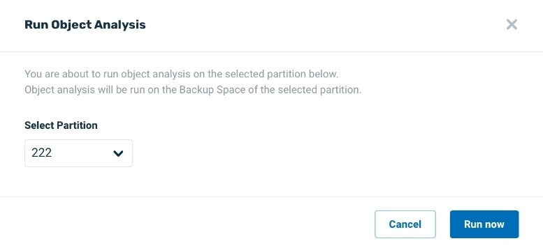
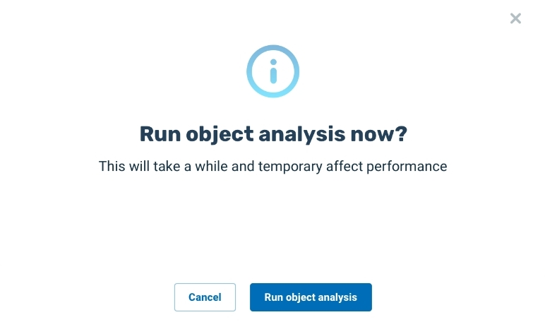
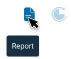
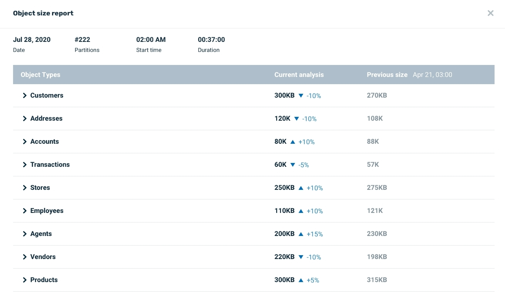
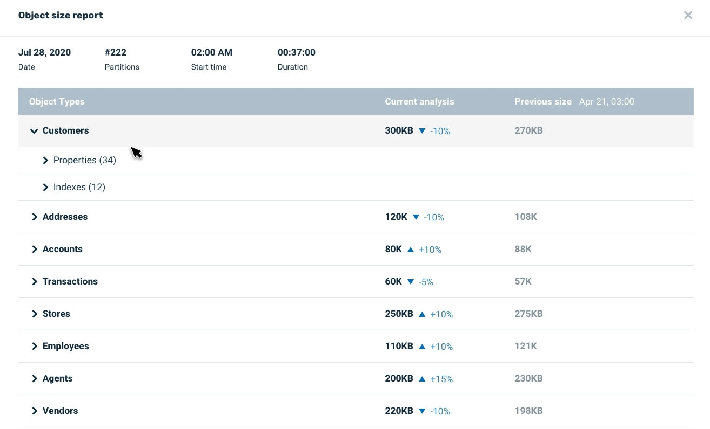
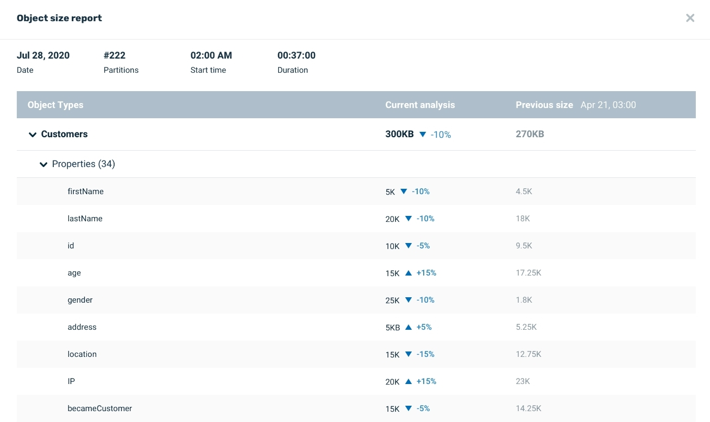
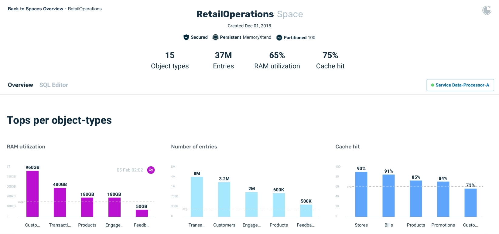
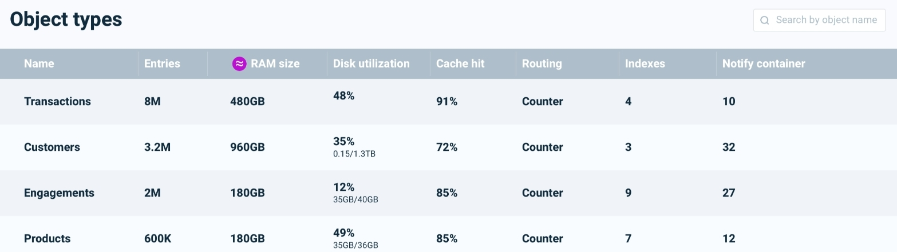
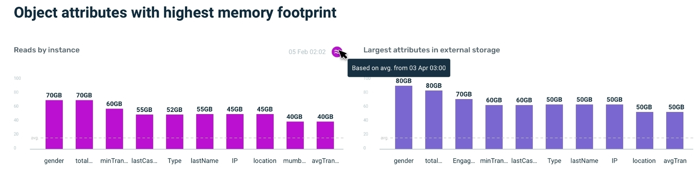
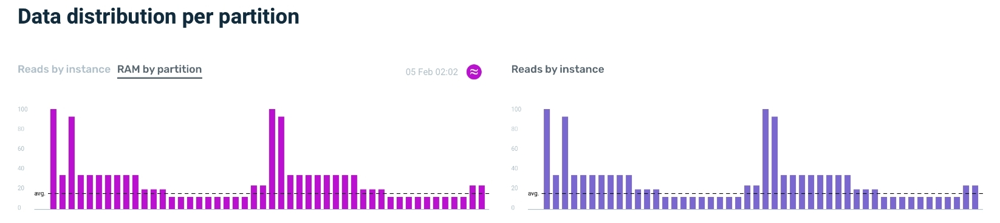

Trigger an Object Analysis by pressing the Run Objects Analysis icon on the Ops Manager Analysis screen:


A dialog box will display, asking for a confirmation of the analysis request:

A default partition is indicated for the analysis, which you may change if desired.
Because the Object Analysis process can take some time, a confirmation screen asks if you want to continue:

Press Run now to confirm that you wish to begin the analysis.
Press Run object analysis to confirm that you wish to begin the analysis.
Because the Object analysis process may consume considerable system resources, it is recommended to run the analysis at an off-peak time, when the system is experiencing relatively low usage.
During the analysis process, the screen appears as follows:
Results of Object Analysis
The result of the Object Analysis is two-fold:
- The Object Analysis Report is generated.
- The Space and Object screens have additional information.
1. Object Analysis Report
When the analysis is complete, a message will appear as follows:
Press Show object analysis report to view the memory usage report.
Alternatively, you can click the icon next to the Report icon to see the report:

If the Object analysis is not successful, press Review Logs to determine the cause of the failure.
Contents of the Object Analysis Report
The report appears as follows:

Click on an Object Type to view the Properties and Indexes submenus:

Details of Object Analysis
Click on Properties or Indexes to see the average storage requirements.
Note that if a previous Object Analysis had been performed, as in the following example, the report will show a comparison between this analysis and the previous analysis:

Notes on Indexes Analysis
Indexes are stored within the Space and used for fast access to data stored either in memory or on disk. This means that indexes compete with object type data for partition memory resources.
This is why it is important to analyze index sizes and take them into consideration as part of system monitoring and future planning.
Index sizes are calculated as part of the object analysis, and the calculated sizes can be seen within the object types reports. Each object type contains its indexes and their calculated sizes, including the ability to compare with the previous object analysis.
Additional Information on Space Screen
The Space screen, which originally showed Reads by Instance and Cache hit, now also shows RAM Utilization:

List of Object Types
If you scroll down the Space screen, you will see a list of Object Types:

Note that the average RAM size is shown for each object.
Click on a Object (e.g. Customers) to see details for each property in the object:

The Space screen also shows Data distribution per partition:

Graphical Display of Object Analysis
In the Object screen ,a graphical representation of entries, memory usage and cache are shown.

Viewing Previous Reports
Press on Reports to see a list of earlier Object Analysis reports:

You can click on a report to review its Object Analysis data.
Click on the Object name (Persons in this example) to see its Object Analysis data.